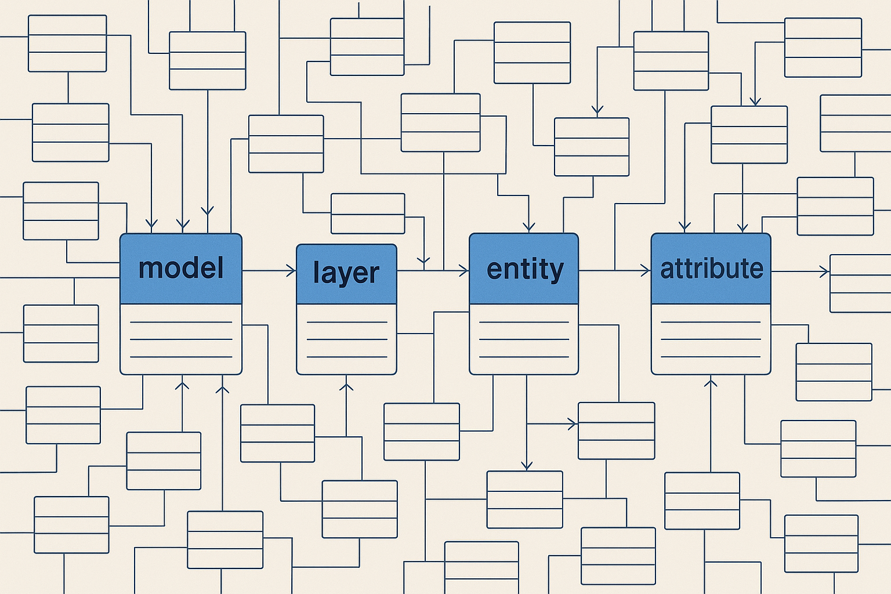
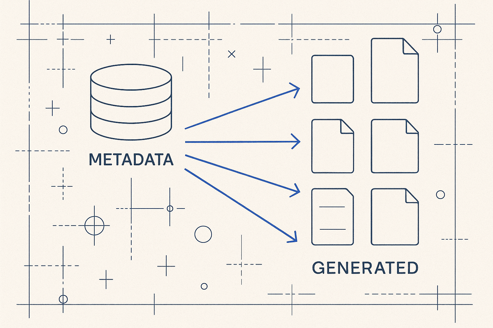

A data platform’s structure and transformation logic are data, not code. Entities, mappings, filters, time policies, rules, lineage — and even the generated SQL — live as rows in one metamodel. Every question about the platform becomes a SQL query instead of an archaeology project.

MDDE’s bet: a data platform’s structure and transformation logic are data. Entities, attributes, mappings, filters, time policies, rules and the generated SQL live as rows in a metamodel — and the platform artifacts (DDL, dbt, pipelines, documentation, diagrams) are generated views of that metadata.
Once structure and logic are data, every question — lineage, impact, quality, history, who-decided-what — becomes a query instead of guesswork. The metamodel even documents itself: the reference docs, DDL and diagrams are generated from it. A metadata framework whose own documentation is hand-maintained would be a contradiction.
Four hubs everything hangs off: model → layer → entity → attribute. From there: mappings (the SELECT as data), filters, time, rules, lineage, governance and knowledge.

The quickest way to get it is to see it run. A small, runnable demo proves the whole idea: the platform’s structure and logic are data, so every question is a SQL query — not a dig through code.
Four hubs everything hangs off: model → entity → attribute, with entity_mapping holding the transformation. Learn these and you can navigate the rest.
Models, entities and attributes are rows you can count and join. “How many attributes does this entity have?” is a query, and identifiers and PII classification live right on the attribute.
The FROM clause, the joins with type and cardinality, the SELECT list — each is a row. Column-level lineage falls out as a query, because the mapping was modeled, not buried in SQL.
From the same metadata the platform generates its DDL, its SQL, its docs and its diagrams. Change the metadata and the artifacts change — they can’t drift, because they are all views of one source.
A handful of tables is enough to prove the trick: SQL generated from metadata instead of typed by hand.
The demo metamodel runs in your browser (DuckDB-WASM) — pick a question or write your own SQL, and see every question become a query. No server, no install.
The model has a vocabulary. These are the named ideas behind it — Executable Metadata, Metadata Star, Data Capsule, Metadata-as-Code and more — each a small, self-contained idea you can point at.
Metadata that doesn’t just describe the platform but runs it; a metadata operating system with SQL, lineage, tests and docs all generated from one source. The concepts explain how the model actually works as a system.
The thinking behind the model — structure, metadata organization, and why a solid model is what AI actually needs.
Before tags, before search: the organization of metadata. Structure, maps of content, and sidecars — so both you and the AI can find your way. (in progress)
A model isn’t a diagram of tables. It’s business knowledge, made explicit and queryable. (draft)
AI doesn’t need more prose. It needs a solid, readable model. Build the structure, and the AI can use it. (draft)
The enterprise logical data model, not as a wall poster — as a metamodel that generates real artifacts. (draft)
Articles publish on Structure Beats Magic and Medium. This section links the metadata pieces as they go live.
This model is the substance under Breakthrough Modeling — the new way of modeling that unites structure, movement, meaning and AI in one model. MDDE (model-driven data engineering) is the generation side; this metamodel is what it generates from.